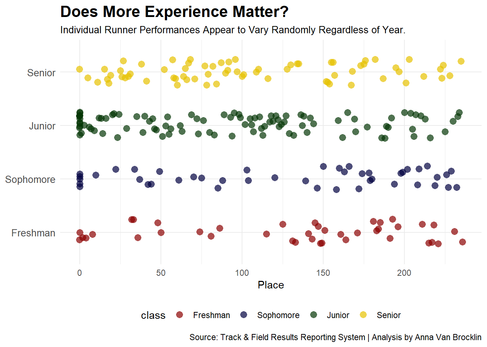
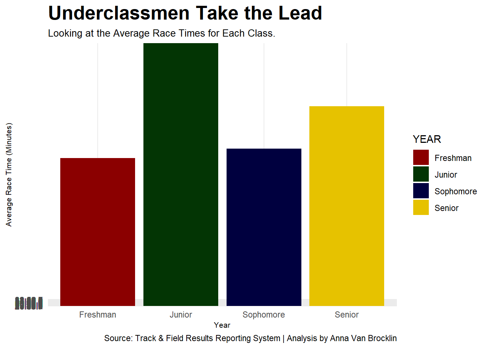
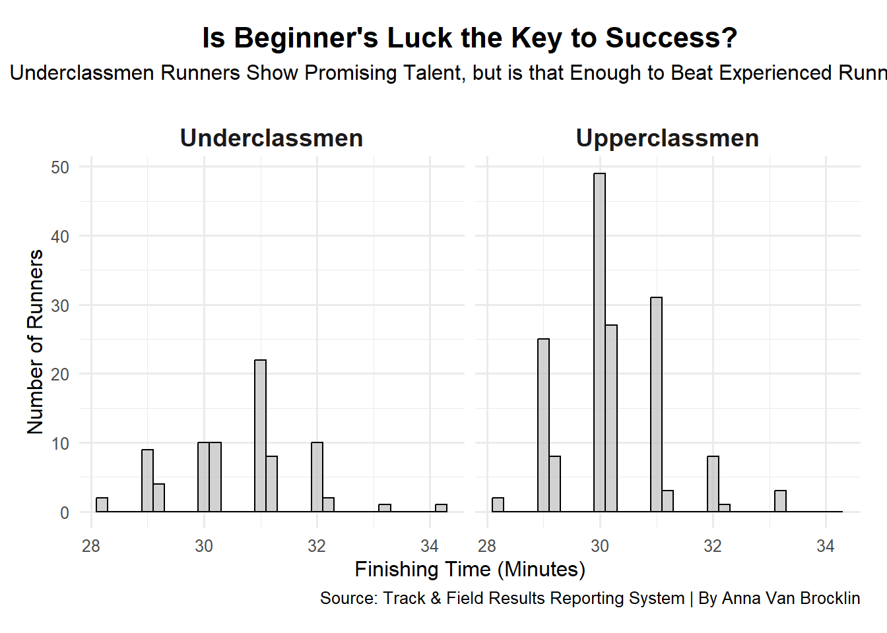

Code
library(tidyverse)Anna Van Brocklin
November 5, 2024
Last year the NCAA DI Men’s Cross Country Championship took place in Charlottesville, Virginia. The meet was hosted by the University of Virginia and Director, Carter Olander. The men’s race was 10,000 kilometers. With over 250 runners, times at the meet ranged from times of 28:37 to 34:16.
When taking a brief look at the data, there seems to be a great number of underclassmen within the top finishers of the race.
This leads to wondering how big of an impact experience has in college cross country.
library(readr)
xc_log <- read_csv("C:/Users/annav/OneDrive/Desktop/SPMC PROJECT/data/xc_log.csv")
xc_log <- xc_log %>%
mutate(
TIME = str_replace_all(TIME, "[^0-9:.]", ""),
time_sec = ifelse(
str_detect(TIME, ":"),
as.numeric(str_extract(TIME, "^\\d+")) * 60 + as.numeric(str_extract(TIME, "(?<=:)\\d+")),
as.numeric(TIME)
),
finish_status = ifelse(is.na(time_sec), "DNF", "Finished"),
class = case_when(
str_detect(YEAR, "FR") ~ "Freshman",
str_detect(YEAR, "SO") ~ "Sophomore",
str_detect(YEAR, "JR") ~ "Junior",
str_detect(YEAR, "SR") ~ "Senior"
)
)
ggplot(data = xc_log, aes(x = PL, y = class, color = class)) +
geom_jitter(aes(color = class), size = 3, alpha = 0.7, height = 0.25, width = 0.2, shape = 16) +
theme_minimal() +
labs(
x = "Place",
y = NULL,
title = "Does More Experience Matter?",
subtitle = "Individual Runner Performances Appear to Vary Randomly Regardless of Year.",
caption = "Source: Track & Field Results Reporting System | Analysis by Anna Van Brocklin"
) +
scale_y_discrete(
limits = c("Freshman", "Sophomore", "Junior", "Senior")
) +
scale_color_manual(
values = c("Freshman" = "#8B0000", "Sophomore" = "#00003f",
"Junior" = "#033504", "Senior" = "#e6c200",
"DNF" = "black"),
breaks = c("Freshman", "Sophomore", "Junior", "Senior", "DNF")
) +
guides(shape = "none") +
theme(
plot.title = element_text(size = 16, face = "bold"),
plot.subtitle = element_text(size = 10),
axis.text.y = element_text(size = 10),
axis.ticks.y = element_blank(),
legend.position = "bottom"
)
The findings from our data show a decently even spread between runners of each year. There are noticeable patterns within the data, but this plot alone isn’t enough to prove one way or another in terms of whether experience has a significant impact on a runner’s performance in cross country.
While we can see the groupings of runners that finished in the middle of the pack within the juniors and seniors, we can also see that freshman and sophomores tend to have a more even spread with runners evenly spaced throughout the race
ggplot(data = xc_log, aes(x = YEAR, y = TIME, fill = YEAR)) +
geom_bar(stat = "summary", fun = "mean") +
scale_fill_manual(
values = c(
"FR-1" = "#8B0000", # Dark Red
"SO-2" = "#00003f", # Dark Blue
"JR-3" = "#033504", # Dark Green
"SR-4" = "#e6c200" # Gold
),
labels = c(
"FR-1" = "Freshman",
"SO-2" = "Sophomore",
"JR-3" = "Junior",
"SR-4" = "Senior"
)
) +
scale_x_discrete(
labels = c(
"FR-1" = "Freshman",
"SO-2" = "Sophomore",
"JR-3" = "Junior",
"SR-4" = "Senior"
)
) +
labs(
x = "Year",
y = "Average Race Time (Minutes)",
title = "Underclassmen Take the Lead.",
subtitle = "Comparing the Average Race Times for Each Class.",
caption = "Source: Track & Field Results Reporting System | Analysis by Anna Van Brocklin"
) +
theme_minimal() +
theme(
plot.title = element_text(size = 20, face = "bold"),
axis.title = element_text(size = 8),
plot.subtitle = element_text(size=10),
panel.grid.minor = element_blank()
)
From our data it is clear when looking at the averages between seniors, juniors, sophomores and freshmen that underclassmen take the lead, at least when their times are averaged together.
However, it’s important to know, there 157 upperclassmen runners in this specific race, with only 79 underclassmen runners which could have a major impact on the average race times overall. While this works both ways, there are less underclassmen to impact the class average.
It’s also worth noting that despite the data showing juniors in last according to the average, out of all four years, juniors individually made up 50% of the top 10 runners. This is why it is important to look at our data in different ways, as one visual can tell one side of a story and another can tell a different perspective.
library(ggplot2)
library(dplyr)
library(stringr)
xc_log_clean <- xc_log %>%
filter(!TIME %in% c("DNF", "DNS")) %>% # Remove rows with DNF or DNS
mutate(
FinishingTime = as.numeric(str_extract(TIME, "^\\d+")) * 60 + # Extract minutes and convert to seconds
as.numeric(str_extract(TIME, "\\d+$")),
Class = case_when(
grepl("^FR|^SO", YEAR) ~ "Underclassmen", # Freshman or Sophomore
grepl("^JR|^SR", YEAR) ~ "Upperclassmen", # Junior or Senior
TRUE ~ "Other" # Handle other cases as "Other"
)
)
ggplot(xc_log_clean, aes(x = FinishingTime / 60, fill = Class)) +
geom_histogram(binwidth = 0.2, position = "dodge", color = "black", alpha = 0.7, fill = "grey") +
facet_wrap(~ Class, nrow = 1) +
labs(
title = "Is Beginner's Luck the Key to Success?",
subtitle = "Underclassmen Runners Show Promising Talent, but is that Enough to Beat Experienced Runners?
",
x = "Finishing Time (Minutes)",
y = "Number of Runners",
caption = "Source: Track & Field Results Reporting System | By Anna Van Brocklin"
) +
theme_minimal(base_size = 12) +
theme(
plot.title = element_text(face = "bold", size = 16, hjust = 0.5),
plot.subtitle = element_text(size = 12, hjust = 0.5),
strip.text = element_text(face = "bold", size = 14),
axis.title = element_text(size = 12),
legend.title = element_text(face = "bold", size = 12),
legend.text = element_text(size = 10),
plot.margin = margin(15, 15, 15, 15)
)
While both underclassmen and upperclassmen appear to be more skewed to the left, faster times, underclassmen have a slight edge compared to the older runners. This suggests that newer runners are not only keeping pace with their more experienced counterparts but are also pushing the boundaries of performance.
That being said, upperclassmen have more runners finishing in the midst of the race, with times closer to the overall average. It can also be said that upperclassmen seem to have less runners towards the right of the race, which shows they tend to be a bit more consistent overall.
The data from the NCAA DI Men’s Cross Country Championship reveals interesting patterns in performance across different class levels. While seniors emerge as the top performers on average, the consistency of underclassmen, particularly among the top finishers, is notable. Although juniors lag behind a group, they tend to perform well individually, in terms of placing runners.
While visually the two groups look different in terms of their data, as a whole, one group of runners doesn’t seem to have a strong advantage over the others, at least in this particular race. To get a better idea of the data and consistencies, we’d most likely need to look at more races and make comparisons to prior year’s races.
We do see clear differences in the data between the different years of runners, however, there are a few factors that could lead to this such as coaching, training, injury history and of course individual talent. Additionally, there 157 upperclassmen runners in this specific race, with only 79 underclassmen runners which could have a major impact on the average race times overall.
Interestingly, while underclassmen display a wider range of finishing times, capturing both some of the fastest and slowest, upperclassmen often cluster around middle performance ranges. This distribution ultimately balances out, with both groups achieving comparable average times. These findings suggest that while underclassmen are slightly favored in this race, there isn’t a clear winner being newer and experienced runners, emphasizing a fairly level playing field for the 2023 DI Cross Country Championship.